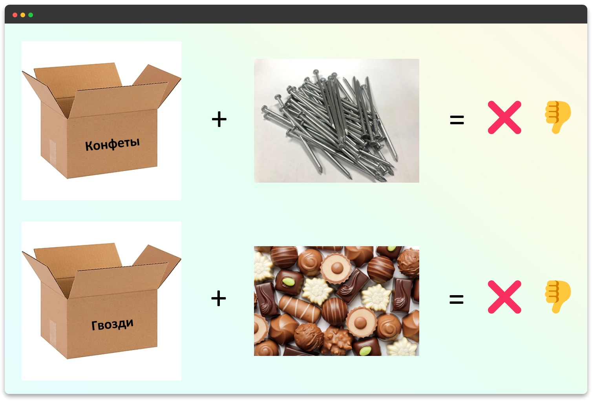
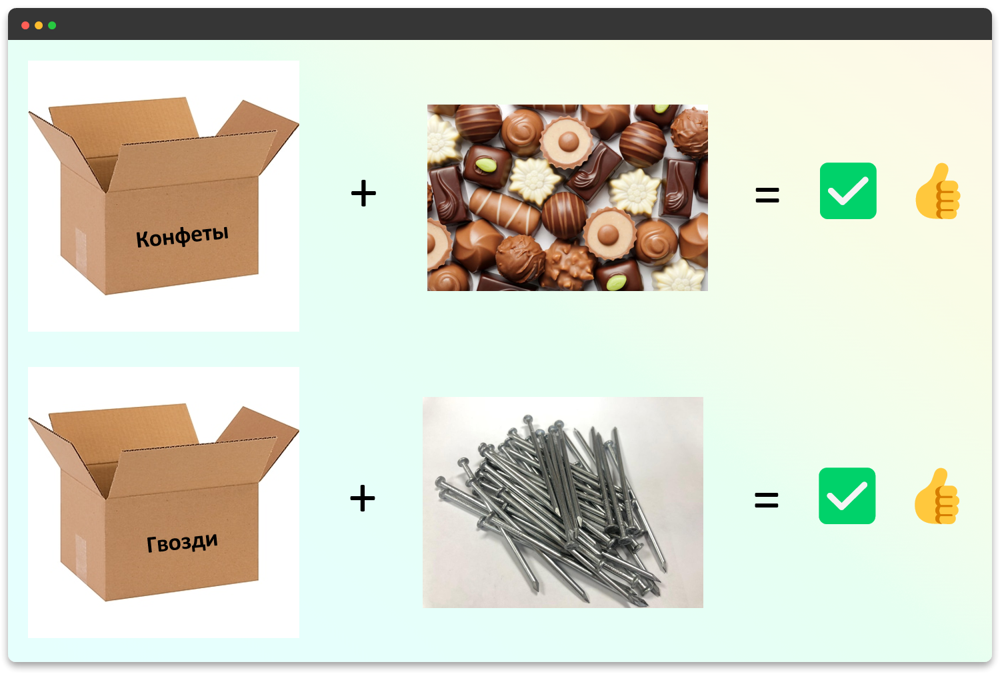
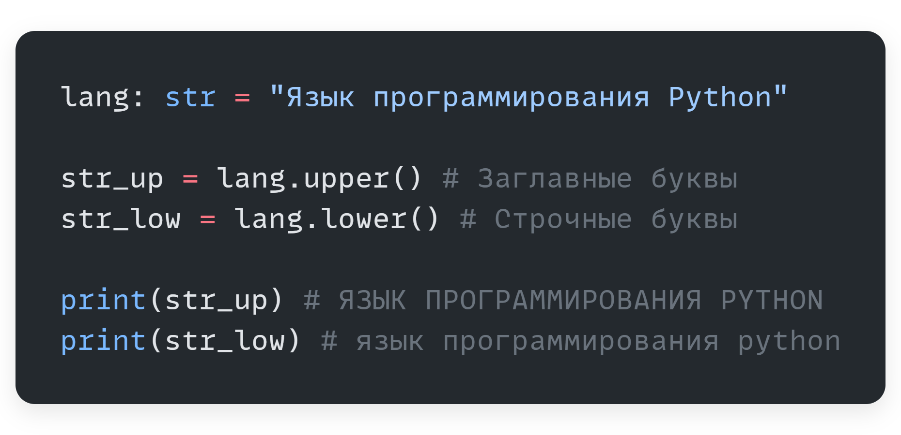

Типы данных в Python
Что такое типы данных?
Язык программирования Python является динамически и строго типизированным.
- Динамическая типизация означает, что вам не нужно заранее объявлять тип переменной. Python сам определяет тип в момент присваивания значения.
- Строгая типизация означает, что Python не позволяет смешивать типы в операциях, где это может привести к неоднозначности. Например, нельзя сложить число и строку без явного преобразования.
Python - Динамическая и строгая типизация


# Python определяет тип number как int
number = 42
# Ошибка! Нельзя сложить число и строку
# print(number + "Двадцать восемь")
# TypeError: unsupported operand type(s) for +: 'int' and 'str'
# Переменной можно присвоить значение другого типа,
# но это изменит тип самой переменной.
number = "Двадцать восемь" # Теперь number - это str
print(number)
number = 0.09 # А теперь - float
print(number)
Строгая, но динамическая типизация
Вы можете менять тип переменной, присваивая ей значение другого типа. Однако в каждый конкретный момент времени переменная имеет четкий тип, и операции с ней должны соответствовать этому типу.
Предположим, что на складе магазина есть коробки:
- с меткой
Конфеты(тип данныхКонфеты) - с меткой
Гвозди(тип данныхГвозди)
Мы ожидаем, что в коробке с конфетами должны быть только конфеты, а не что-то иное.
Будет крайне грустно и неожиданно, если в этой коробке мы обнаружим гвозди.
Так же работает и со строгой типизацией. Если у вас есть число, вы не можете просто "сложить" его со строкой. Python остановит вас и укажет на ошибку, предотвращая путаницу.
 Основные типы данных
Тип данных определяет, какие именно значения может хранить переменная.
- int: Целые числа (
1,42,-100). В Python размер целых чисел ограничен только доступной памятью. - float: Дробные числа, или числа с плавающей точкой (
3.14,-0.01,2.0). - str: Строки (
"Привет",'Python'). - bool: Логические значения (
TrueилиFalse). - NoneType: Специальный тип, имеющий всего одно значение —
None(означает "ничего" или отсутствие значения).
Python - Основные типы данных
int_value = 42 # Целое число
float_value = 3.14 # Дробное число
love_name = "Юля" # Строка
is_happy = True # Логическое значение
empty_value = None # Пустое значение (None)
Зачем нужна типизация?
- Обеспечивает предсказуемость: мы знаем, какие операции можно совершать с переменной.
- Помогает отлавливать ошибки: IDE и интерпретатор могут указать на некорректное использование типов.
- Оптимизация: интерпретатор понимает, как эффективно хранить данные и работать с ними.
Округление чисел
Для округления в Python есть встроенная функция round() и функции из модуля math.
Python - Округление чисел
import math # Импортируем модуль для доступа к математическим функциям
# round() - математическое округление до ближайшего целого
print(round(3.25)) # 3
print(round(3.5)) # 4 (округляет до ближайшего четного числа в .5 случаях)
print(round(3.75)) # 4
print(round(-3.5)) # -4
# math.floor() всегда округляет в меньшую сторону (к -∞)
print(math.floor(1.99)) # 1
print(math.floor(2.99)) # 2
print(math.floor(-2.01)) # -3
# math.ceil() всегда округляет в большую сторону (к +∞)
print(math.ceil(1.01)) # 2
print(math.ceil(2.001)) # 3
print(math.ceil(-1.99)) # -1
# int() просто отбрасывает дробную часть
print(int(2.99)) # 2
print(int(-2.99)) # -2
Арифметика с разными числовыми типами
int и float
В языке Python между переменными типа int и float можно выполнять арифметические операции.
Результат будет автоматически преобразован к типу float, чтобы сохранить точность вычислений.
Python - Арифметика с int и float
x = 1
y = 2.2
print(x + y) # 3.2
print(x * y) # 2.2
print(x / y) # 0.45454545454545453
print(x % y) # 1.0
Явное приведение типов
Явное приведение типов
Для преобразования данных одного типа в другой можно использовать встроенные функции-конструкторы: int(), str(), float(), bool().
Python - Явное приведение типов
count = 2
int_value = int(count) # Число 2
string_value = str(count) # Строка "2"
float_value = float(count) # Дробное 2.0
print(int_value)
print(string_value)
print(float_value)
Приведение строки в число
Чтобы преобразовать строку в число, можно использовать функции int() или float().
Важно: строка должна содержать только числовые символы, иначе произойдет ошибка.
Python - Приведение строки к числу
text = "123"
int_value = int(text)
print(int_value * 2) # 123 * 2 = 246
# text_with_error = "123a"
# int_value_error = int(text_with_error) # ValueError: invalid literal for int()
Объекты и вызов через точку
Объект
В Python всё является объектом (число, строка, переменная, функция).
Объект из реальной жизни обладает двумя важными характеристиками:
- АТРИБУТЫ (СВОЙСТВА) (Количественно-Качественная характеристика)
- МЕТОДЫ (Действия которые этот объект может делать)
Например:
Студент это Объект
У него есть атрибуты: возраст, рост, цвет глаз, …
У него есть методы: учиться, спать, играть в настолки, …
Переносим эти понятия в мир программирования.
у str (строк) есть атрибуты и методы
у int (чисел) тоже есть атрибуты и методы, потому что это тоже объекты
Точечная нотация
Доступ к атрибутам и методам объекта осуществляется через точку .
Пишем имя объекта (переменной), потом ставим точку и выбираем нужные операции.
Атрибут вызывается без круглых скобок.
Метод обязательно с круглыми скобками ().
Рассмотрим несколько свойств и методов. Однако их великое множество, и все они изучаются на практике при решении конкретных проблем.
Python - Методы и атрибуты объектов
my_string_object = 'String is an Object'
my_num_object = -42.42
# ? Встроенные функции для работы с объектами
print(len(my_string_object)) # Длина строки (это функция, а не метод)
print(type(my_string_object)) # Тип объекта (тоже функция)
# ? Методы строки
print('is' in my_string_object) # Содержит ли строка подстроку 'is' (оператор in)
print(my_string_object.upper()) # Сделать все буквы заглавными
print(my_string_object.startswith('Str')) # Начинается ли строка с 'Str'
# ? Встроенные функции для чисел
print(abs(my_num_object)) # Вернуть модуль числа
# ? Методы float (у int их нет)
print(my_num_object.is_integer()) # Является ли число целым (False)
print((10.0).is_integer()) # Является ли число целым (True)
Аннотации типов в Python
На прошлом уроке мы узнали, что Python — язык с динамической типизацией. Это значит, что нам не нужно объявлять тип переменной, и одна и та же переменная может хранить данные разных типов в разное время.
Однако у такого подхода есть и обратная сторона:
- Иногда бывает сложно понять, какой тип данных ожидает функция.
- Редактор кода не всегда может дать точные подсказки.
- Ошибки, связанные с неверным типом данных, могут проявиться только во время выполнения программы.
Чтобы решить эти проблемы, в Python были введены аннотации типов (type hints).
Аннотации типов
Аннотации типов — это специальный синтаксис, который позволяет "подсказать", какой тип данных мы ожидаем увидеть в переменной, аргументе функции или в качестве возвращаемого значения.
Важно: Сами по себе аннотации не делают Python статически типизированным. Интерпретатор Python по-прежнему игнорирует их при выполнении кода. Их главная цель — помочь разработчикам и специальным инструментам анализа кода.
Зачем нужны аннотации типов?
- Читаемость кода: Сразу видно, какие данные использует функция.
- Помощь от редактора (IDE): Редакторы, как VS Code, используют аннотации для более точного автодополнения и подсветки ошибок.
- Статический анализ: Инструменты, такие как
mypy, могут проверить ваш код до запуска и найти потенциальные ошибки с типами.
Как использовать аннотации
1. Аннотации переменных
Синтаксис простой: после имени переменной ставится двоеточие и указывается тип.
Python - Аннотации переменных
# Вместо:
player_name = "Gandalf"
player_level = 20
# С аннотациями:
player_name: str = "Gandalf"
player_level: int = 20
can_cast_spells: bool = True
2. Аннотации функций
Это самое полезное применение аннотаций. Мы можем указать типы для аргументов и для возвращаемого значения (после символов ->).
Подробно про функции будем изучать на следующих уроках.
Модуль `typing` для сложных типов
Базовых типов (int, str, bool, float) не всегда достаточно. Для описания более сложных структур, таких как списки или словари, используется модуль typing.
List
Для аннотации списка нужно указать тип элементов, которые в нем содержатся.
Python - Аннотация List
from typing import List
inventory: List[str] = ["меч", "щит", "зелье"]
enemy_healths: List[int] = [100, 120, 80]
Dict
Для словарей указываются типы ключа и значения.
Python - Аннотация Dict
from typing import Dict
player_stats: Dict[str, int] = {
"здоровье": 100,
"мана": 80,
"сила": 15
}
Union и Optional
Union[X, Y]означает, что переменная может быть одного из нескольких типов (X или Y).Optional[X]— это короткая запись дляUnion[X, None]. Она означает, что переменная может иметь тип X или бытьNone.
Python - Аннотации Union и Optional
from typing import Union, Optional
# ID может быть числом или строкой
user_id: Union[int, str] = "user-123"
user_id = 456
# У персонажа может быть питомец (имя), а может и не быть
pet_name: Optional[str] = "Hedwig"
pet_name = None # Тоже валидное значение
Статическая проверка с `mypy`
Чтобы аннотации приносили максимальную пользу, можно использовать статический анализатор типов, например, mypy.
- Установите его:
pip install mypy - Напишите код с аннотациями и сохраните в файл (например,
game.py). - Запустите проверку из терминала:
mypy game.py
Если mypy найдет несоответствие типов, он укажет на ошибку.
Python - Пример для mypy (game.py)
# game.py
def deal_damage(health: int, damage: int) -> int:
return health - damage
# mypy найдет здесь ошибку, так как мы передаем строку вместо числа
new_health = deal_damage(100, "пятьдесят")
print(new_health)
Запустив mypy game.py, вы увидите ошибку, похожую на:
error: Argument 2 to "deal_damage" has incompatible type "str"; expected "int"
Это позволяет отлавливать баги еще до того, как вы запустите программу!
Альтернатива: `pyright` (Pylance в VS Code)
Кроме mypy, существует еще один популярный и очень мощный анализатор типов — pyright, разработанный Microsoft.
Если вы используете Visual Studio Code, то вы уже с ним работаете! Расширение Pylance, которое обеспечивает интеллектуальную подсветку синтаксиса, автодополнение и проверку ошибок для Python, основано именно на pyright.
Основные преимущества `pyright`:
- Скорость: Он значительно быстрее, чем
mypy, что особенно заметно на больших проектах. - Интеграция с VS Code: Ошибки типов подсвечиваются прямо в редакторе в реальном времени, без необходимости запускать отдельную команду.
- Строгость: По умолчанию
pyrightможет быть более строгим в некоторых проверках, что помогает писать более надежный код.
Вам не нужно ничего дополнительно устанавливать, если у вас уже есть VS Code с расширением Pylance. Просто добавляйте аннотации, и редактор сразу начнет их проверять.

На изображении выше видно, как pyright (Pylance) прямо в редакторе подсвечивает ту же ошибку, что мы рассматривали в примере с mypy.
Какой инструмент выбрать?
Для начала, возможностей Pylance в VS Code более чем достаточно. Он обеспечивает отличный опыт "из коробки". mypy полезен, когда вам нужно запускать проверку типов отдельно, например, в системах непрерывной интеграции (CI/CD) или если вы используете другой редактор кода.